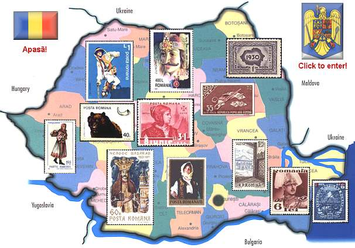

ROMÂNIA
My country of glory
,
my country of longing
,
my country of stamps

Tara mea de glorii
,
tara mea de timbre
,
tara mea de dor
First publication: June 25, 2001. Copyright © 2001 - 2022 by Victor Manta, Switzerland, USA